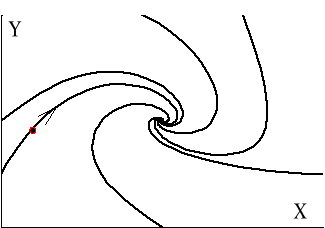
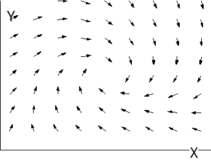
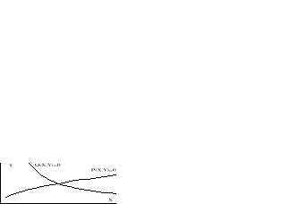
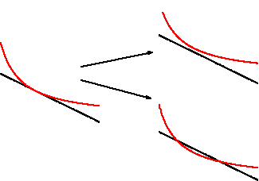
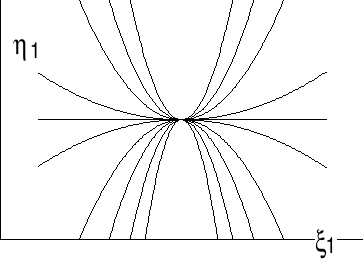
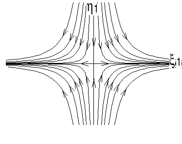
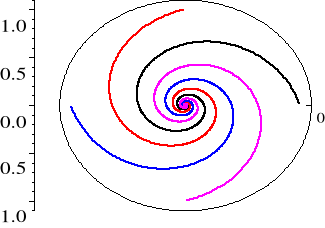
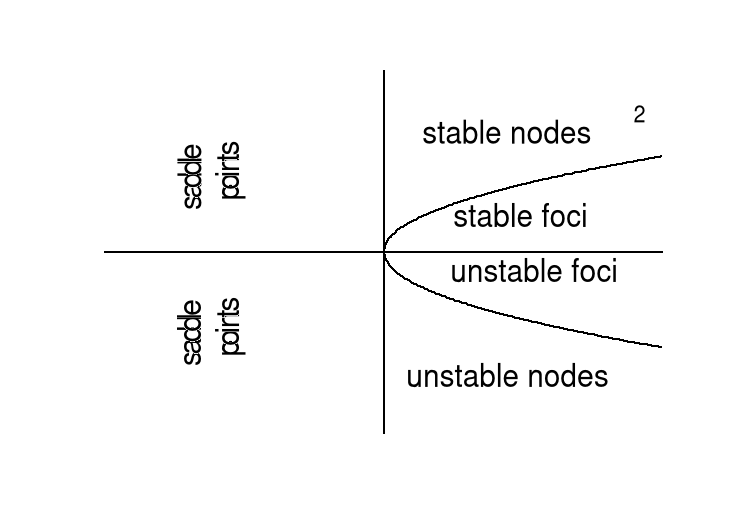
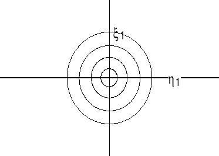

2. Foundations of the theory of qualitative analysis of nonlinear differential equations. Analysis of singular points
The examples given in the previous chapter show that the non-trivial kinetic behaviour demonstrated by systems far from equilibrium is described by nonlinear differential equations. An explicit solution of such equations is usually impossible. Numerical solutions, which can be obtained using computers, have a significant drawback. Such solutions are obtained at chosen values of the parameters of the system — initial concentrations, rate constants, temperatures, and the like. In this connection, having obtained a numerical solution, it is difficult to determine whether this solution is characteristic of any values of the parameters or not. Perhaps, under some other set of conditions, the system under study has a solution of a completely different type and demonstrates non-trivial behaviour. To answer the question of what solutions of the given system of equations exist and, thus, what types of behaviour the system under study can demonstrate, the method of qualitative analysis of differential equations is used.
Let us note that the method of qualitative analysis of nonlinear differential equations is used not only for the study of chemical systems, but also in solving many other problems — in many-body mechanics, in the theory of electrical circuits, in control theory, in biology, ecology, and even in the construction of sociological and economic models.
Let us consider the procedure of qualitative analysis using the simple example of two differential equations. Let the dynamical behaviour of the system under study be described by the system of equations .
The functions P and Q are nonlinear but analytic. The system of equations is autonomous. This means that the time variable is absent in explicit form on the right-hand side of the equations. To such equations there correspond systems for which the external action is constant and does not depend on time.
At any moment of time the system under study is characterised by specific values of the variables X and Y. Let us mark the point corresponding to these values on the XY plane (Fig. 2.1) and call it the representative point.

With the passage of time the variables X and Y change their values and, accordingly, the representative point moves on the XY plane, describing a certain curve. The curve obtained characterises the kinetic behaviour of the system under study. Let us call the XY plane the phase plane, and the curve described by the representative point in the course of the evolution of the system the phase trajectory. Naturally, the phase space of a system of three differential equations will be three-dimensional, of four equations four-dimensional, and so on. The set of phase trajectories in phase space is called the phase portrait of the system.
The equation describing the phase trajectory for the system of equations can be obtained by dividing these equations by each other:
It follows from differential equation that only one phase trajectory passes through a chosen point of phase space, provided that at this point . The quantity in equation gives the angle of inclination of the tangent to the phase trajectory at any point. If one takes into account the direction of evolution of the system (the direction of motion along the phase trajectory with the passage of time), then it becomes clear that equations define a vector field in phase space. At each point of phase space the vector is directed along the tangent to the phase trajectory (Fig. 2.2)

Let us set the right-hand sides in equations equal to zero:
Each of the equalities is an implicit dependence of Y on X and thus describes a certain curve on the phase plane (Fig. 2.3).

These curves are called the principal isoclines of the system. They represent the locus of points at which the tangent to the phase trajectory is a vertical and a horizontal line, respectively.
The steady states of the system, i.e. states that do not depend on time, are found from the solution of the system of equations and appear in Fig. 2.3 as the points of intersection of the principal isoclines. Such points are called singular points of phase space. Nonlinear systems can demonstrate more than one singular point.
Let us note that conditions are satisfied not only at the points of intersection, but also at the points of tangency of the principal isoclines. It is obvious that if the parameters of the equation are changed slightly, the point of intersection of the principal isoclines will shift somewhat. However, upon a small change of the parameters the system preserves the topology of its phase portrait in a qualitative way. Such systems are called coarse. If, however, the parameters of a system demonstrating tangency of the principal isoclines are changed somewhat, then the phase portrait of the system changes in a qualitative way: the singular point either disappears altogether, or turns into two singular points (Fig. 2.4). Such systems are called non-coarse.

We shall consider coarse systems first of all. Let us carry out an analysis of the stability of singular points, generalising the method that we used earlier to determine the stability of the steady-state solution in the thermal explosion problem.
Let the singular point of the system of equations have coordinates X* and Y*. Let us introduce the variables and :
Thus, we have placed the origin at the singular point. If the small deviations and decrease in the course of the evolution of the system and tend to zero, the singular point is stable. If, however, the deviations grow, the singular point is unstable. ξη
Let us use the smallness of the quantities and and expand the right-hand sides in equation ξη in a Taylor series, keeping the first terms, i.e. let us linearise the equations:
Let us denote the coefficients of the resulting system of linear equations as follows:
Let us note that, by virtue of the linear dependence on x ξ
Analogous equalities are also valid with respect to the other partial derivatives in equations . Thus, the matrix of linear coefficients of equation can be obtained directly from the system of equations :
It is known that the solutions of a system of linear differential equations are determined by the roots of the characteristic equation, which is obtained from the condition:
The characteristic equation has the form:
where
Solving the characteristic equation is essentially finding the eigenvalues and eigenvectors of the matrix of linear coefficients . In its physical meaning, in the course of this procedure one finds the linear transformation that takes the coordinate system ( , ) into the coordinate system (1, 1 ). In this new coordinate system equations ξηξη become independent:
where 1, 2 are the roots of the characteristic equation.λλ
The solutions of each of equations are an exponential function, the sign of whose exponent is determined by the sign of the root of the characteristic equation or .
where and are determined by the initial conditions.
If the roots of the characteristic equation are negative (or have negative real parts), then these solutions tend to zero with the passage of time. If, however, the roots are positive, solutions grow without bound. The solutions of the linearised system of equations are built in a linear way from the solutions of the system of equations . Thus, the sign of the roots of the characteristic equation determines the behaviour of small deviations of the system from the steady state. If the real parts of the roots of the characteristic equation are negative, the singular point and the steady state corresponding to it are stable. If, however, at least one of the roots of the characteristic equation has a positive real part, the singular point is unstable.
An analysis of the roots of the characteristic equation makes it possible not only to find out the stability of a singular point, but also to determine the type of the phase trajectory near it. Let us consider the possible cases.
Case 1. , are real and have the same sign. For this it is sufficient that the coefficients of the characteristic equation satisfy the conditions and .
Let us eliminate the variable t from equations by dividing these equations by each other. We obtain a differential equation describing the phase trajectories near the singular point, constructed in the coordinate system (1, 1 ):ξη
The solution of equation looks as follows:
This solution describes a family of parabolas with exponent passing through every point of phase space (Fig. 2.5).

A singular point with this type of behaviour of the trajectories in the immediate vicinity is called a "node". Depending on the sign of the roots 1 and 2, the phase trajectories either tend to this singular point, in which case the node is stable, or move away from it with the passage of time, in which case the node is called unstable. A simplified graphical representation of nodes is given below: λλ
[equation missing]
Case 2. , are real but have different signs. This happens if . Solution in this case takes the following form:
Solution is a family of hyperbolas, shown in Fig. 2.6.

Such a singular point bears the name "saddle". In the immediate vicinity of this singular point the phase trajectories tend towards the singular point along one coordinate, and run away from it along the other coordinate. Graphically a saddle is denoted as follows:
[equation missing]
Let us note that near a saddle the phase trajectories reflecting the kinetic behaviour of the system may differ from each other in an essential way. Indeed, in one region of phase space one of the variables of the system grows with time, while in another region it decreases. The trajectories that separate the regions of phase space with different behaviour of the system are called the separatrices of the saddle.
Case 3. , — complex conjugate roots of the characteristic equation. This case is observed if > 0 and 2 < 4.ΔσΔ
Let and have the form:
Since and are complex conjugate numbers, the functions 1, 1 are also complex conjugates:ξη
Equations must be written as follows:
Adding the equations to each other and subtracting them from each other, we obtain separate differential equations for the real part u and the imaginary part v. Dividing the resulting equations by each other, we obtain:
Let us introduce polar coordinates and . In these coordinates equation takes the following form:
The solution of equation is a family of logarithmic spirals,
which is shown in Fig. 2.7

A singular point of this type bears the name "focus". Depending on the sign of the real part of the roots of the characteristic equation, the phase trajectory either rushes towards the singular point along a spiral, or runs away from it. Graphically foci are depicted as follows:
[equation missing] [equation missing]
As we have seen, the type of the singular points of a dynamical system and, accordingly, the behaviour of the phase trajectories near a singular point are determined by the roots 1 and 2. These roots, in turn, are determined by the signs and magnitudes of the coefficients and of the characteristic equation λλσΔ. Let us represent graphically the domains of values of and corresponding to different types of singular points. In Fig. 2.8, in the domain of negative values of the singular points are saddles. In the domain of positive values of the curve 2 = 4 separates the domains of existence of foci and nodes. In this case, positive values of correspond to stable singular points, and negative values to unstable singular points.σΔΔΔσΔσ
To all the lines in Fig. 2.8 there correspond situations in which the type of the singular point changes. These situations relate to non-coarse systems. Indeed, small changes of the parameters will inevitably

shift the singular point into one of the adjoining domains. One of the non-coarse systems corresponds to a change of the sign of the quantity at positive values of . In this case the roots of the characteristic equation will be imaginary quantities. To this situation there corresponds a singular point near which the phase trajectories are closed curves — circles (Fig. 2.9). Such a singular point bears the name "centre". Near this point the system undergoes undamped oscillations whose amplitude is determined by the initial conditions.σΔ

Let us note once again that such a singular point, a centre, corresponds to a non-coarse system, i.e. upon a small change of the parameters it turns into a singular point of focus type, i.e. it describes either damped oscillations or oscillations with increasing amplitude.